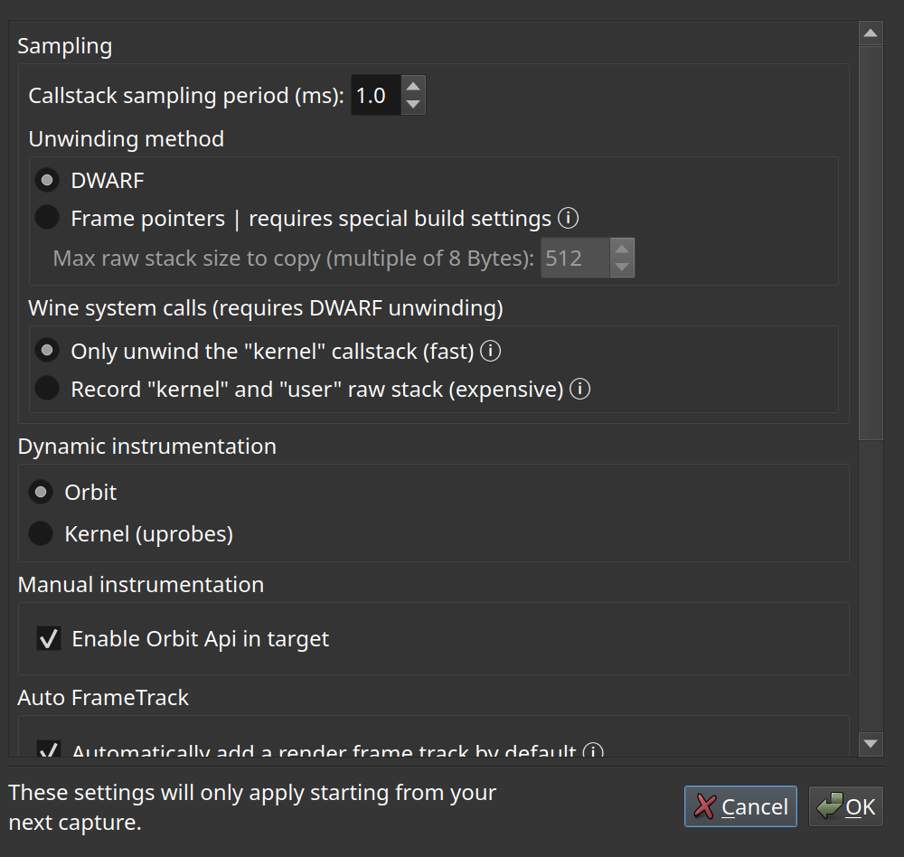

Capture options
What Orbit collects while a capture runs, and how much of it.
Everything a capture records costs something to record. The capture options decide what is worth paying for on this run: the callstack sampling rate and unwinding method, whether thread states and scheduling are collected, whether memory usage is sampled, and whether the manual instrumentation compiled into the target is enabled.
